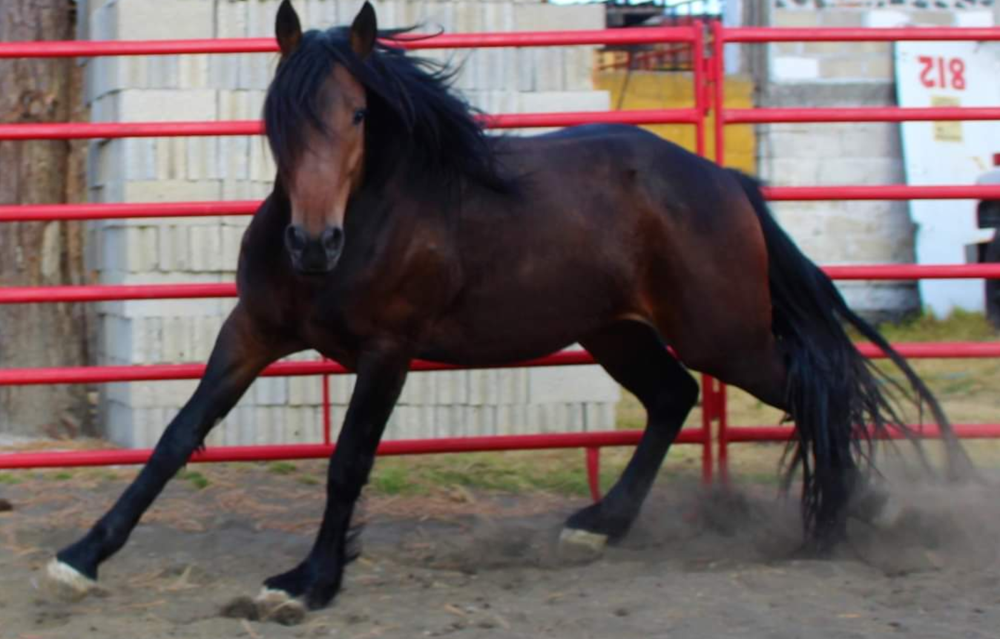
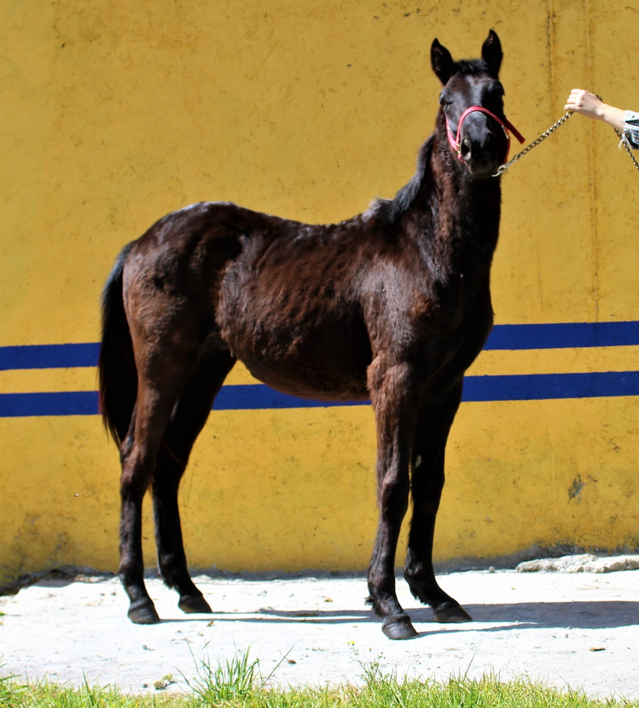
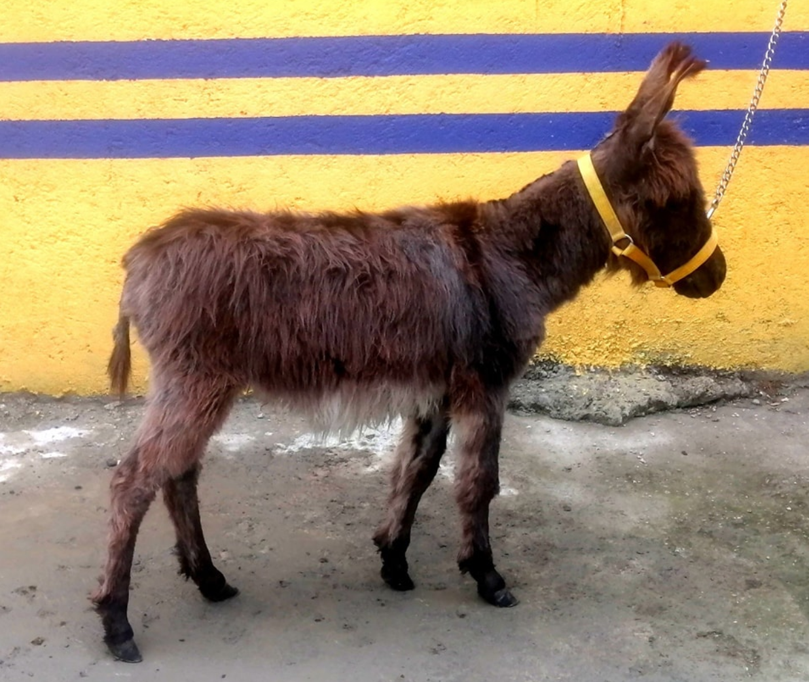
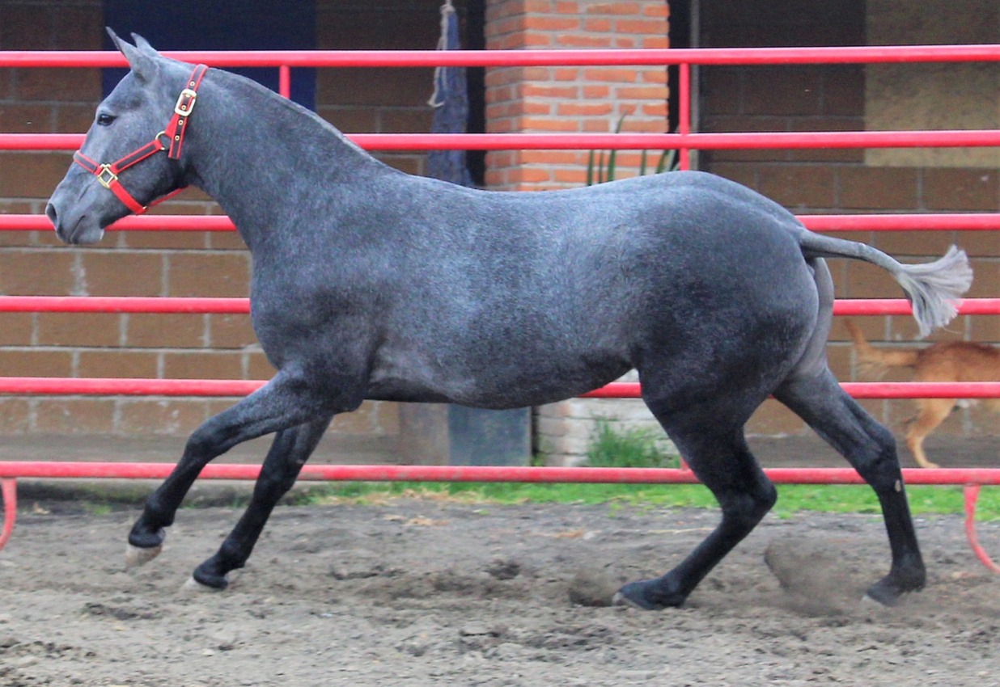
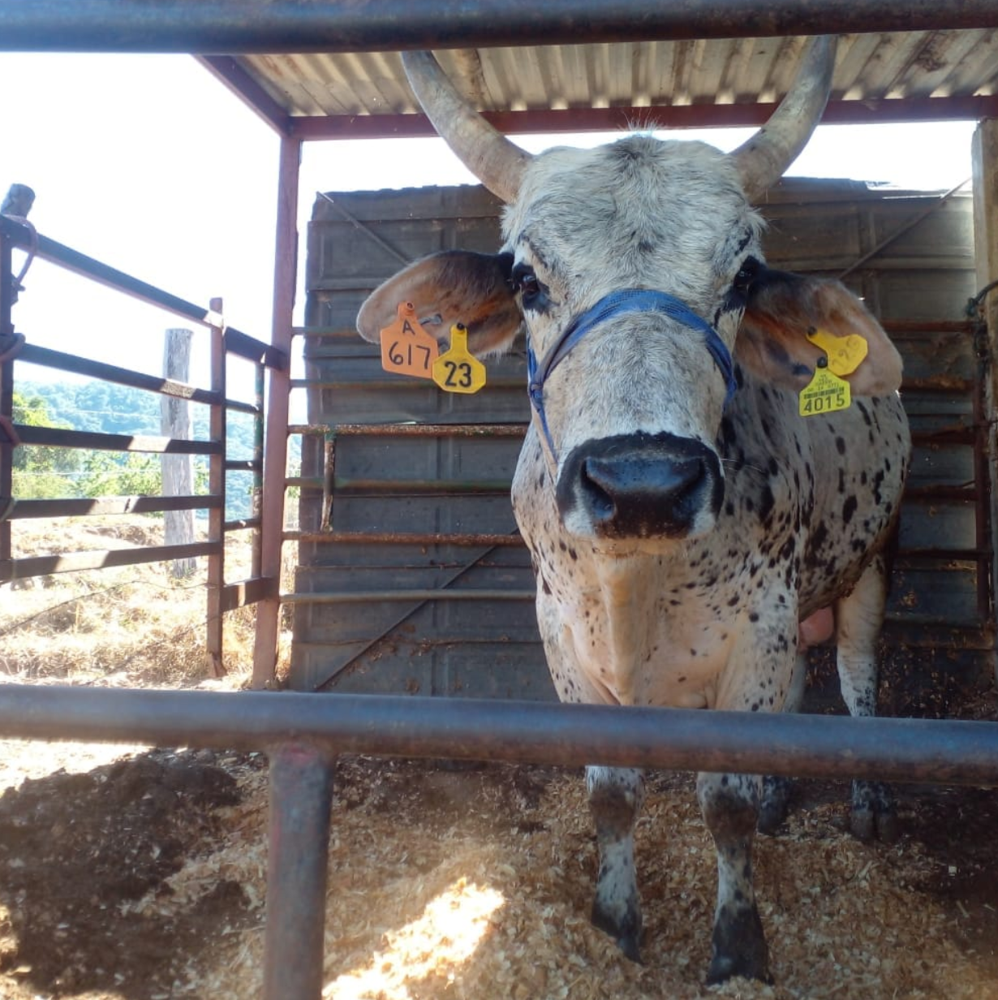

Raza: CUFRISIAN
Edad: 4 años y medio
Color: Negro
Alzada: 1.58 a la cruz
Precio: $95,500 MXN
Descripción:
POTRO FRISIÓN CON CUARTO DE MILLA, LÍNEAS HOLANDESAS, Padre Importado de Holanda, Madre Americana.
Buen carácter, mansito cualquier jinete, muy robusto, muy ancho, partido de anca.
Me interesa

Raza: AZTECA
Edad: 6 años
Color: Tordillo
Alzada: 1.62 a la cruz
Precio: $52,500 MXN
Descripción:
POTRO ESPAÑOL CON AZTECA (AZTECA 3/4 ESPAÑOL), EXCELENTE LÍNEA. Buen carácter, mansito cualquier jinete, muy robusto, muy ancho.
Me interesa

Raza: CUARTO DE MILLA
Edad: 5 años
Color: Alazan
Alzada: 1.50 a la cruz
Precio: $42,500 MXN
Descripción:
SÚPER MANSITO, UNA MÁQUINA DE MÚSCULOS, CALIDAD PREMIUM, NOBLE, CUALQUIER JINETE, ideal para cualquier deporte, equitación o cabalgatas (Castrado).
Me interesa

Raza: CUATRO DE MILLA
Edad: 1 año
Color: Prieto zaino
Alzada: 1.30 a la cruz
Precio: $26,500 MXN
Descripción:
HERMOSO POTRILLO PRIETO Z, EXCELENTE LÍNEA AMERICANA, CALIDAD PREMIUM, muy lucido grande, líneas de conformación, ideal para cualquier deporte, equitación o futura reproducción.
Me interesa

Raza: BURRITO SICILIANO
Edad: 3 años
Color: Prieto
Alzada: 0.80 a la cruz
Precio: $26,500 MXN
Descripción:
HERMOSO BURRITO SICILIANO O BURRITO PONY, EXCELENTE LÍNEA, YA NO CRECE, CALIDAD PREMIUM, ENTERTO.
Me interesa

Raza: ESPAÑOLA
Edad: 1 año 6 meses
Color: Moro Carbonero
Alzada: 1.50 a la cruz
Precio: $52,500 MXN
Descripción:
HERMOSA POTRANCA ESPAÑOLA, CALIDAD PREMIUM, HIJA DE SEMENTAL IMPORTADO, MANSA, SOLO MANEJO A PIE fuerte, ancha.
Ideal para futura reproducción.
Me interesa

Raza: TORO AMERICANO CRUZA CON CEBU EUROPEO
Edad: 5 años
Color: Tordillo moteado
Alzada: 1.60 a la cruz
Precio: $45,000 MXN
Descripción:
TORO IDEAL PARA JARIPEO, CON BUENOS MOVIMIENTO Y MUY VELOZ, FACIL DE MANEJAR A PIE, ÚNICO EN SU TIPO EN MÉXICO, TORO JUGADO EN ARENAS GRINGAS.
Me interesa

Raza: CUFRISIAN
Edad: 4 años y medio
Color: Negro
Alzada: 1.58 a la cruz
Precio: $95,500 MXN
Descripción:
POTRO FRISIÓN CON CUARTO DE MILLA, LÍNEAS HOLANDESAS, Padre Importado de Holanda, Madre Americana.
Buen carácter, mansito cualquier jinete, muy robusto, muy ancho, partido de anca.
Me interesa